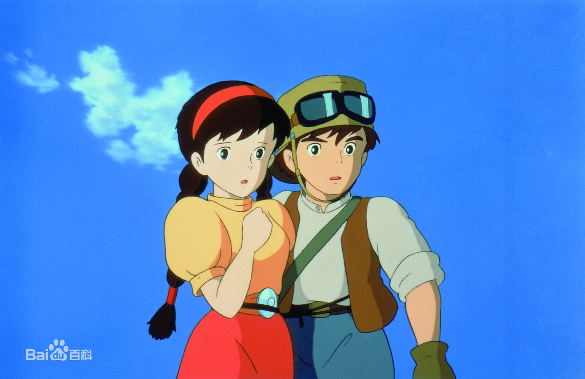
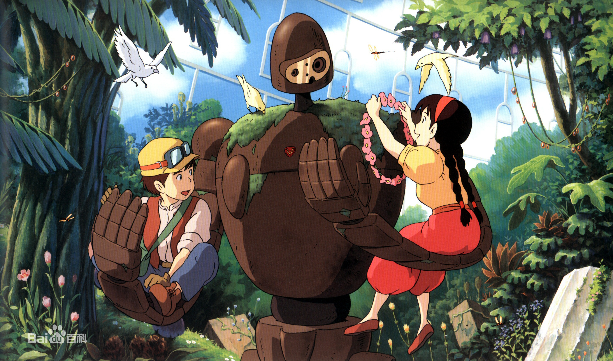
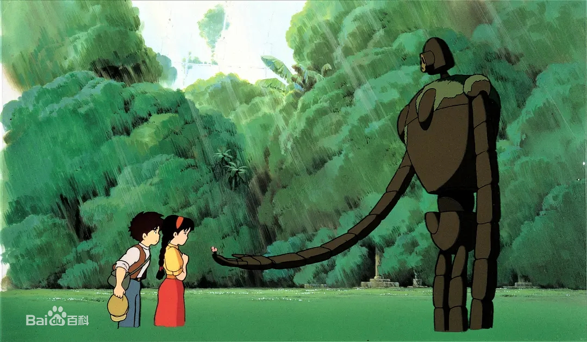
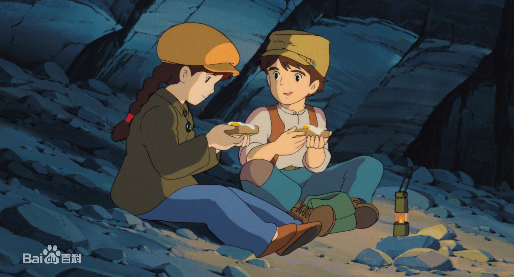

剧情简介
希达在帕祖的房中发现了一张天空之城的照片，帕祖告诉她那是他父亲拍到的天空之城拉普达的照片，但没有人相信，他立志要找到拉普达证明给人看。

幕后花絮
天空之城》是宫第三部作品，也是吉卜力推出的首部，亦是该工作室的开山之作 [4] 。 在1984年宫崎骏推出的动画《风之谷》受到热烈关注后，当时崎骏与高畑勋及铃木敏夫三人商量打算将《风之谷》赚来的资金；用在高畑勋计划筹备拍摄的纪录片《柳川堀割物语》上。但之后因为《割物语》在开始就出现资金不足的状况，铃木敏夫为了解决费用问题，便请宫崎骏再拍摄一部动画电影。

剧本原型和制造过程
凡剧，所以一开始决定由宇崎龙童担任音乐创但由于制片人高畑勋的再三思量 [18] ，还是决定改让为《风之谷》创作过音乐的的久石让来继续担任该片的音乐创作，以爱尔兰和苏格兰的民谣为基础的全管弦乐的方式来创作 [19]

电影评价
天空之城》比人们所期望的宫崎骏作品更加倾向于公式化，但他后期作品中梦幻般的光辉已经在该片中初见雏形，而且该片中还有着惊人的科幻元素，足以比肩当代的一些优秀科幻电影作品。 该片的主旋律是冒险，但宫崎骏把对片中细关注无形地没有影响到影片的元素。宫崎骏即使只用简单的几个镜观众造成冲击，在